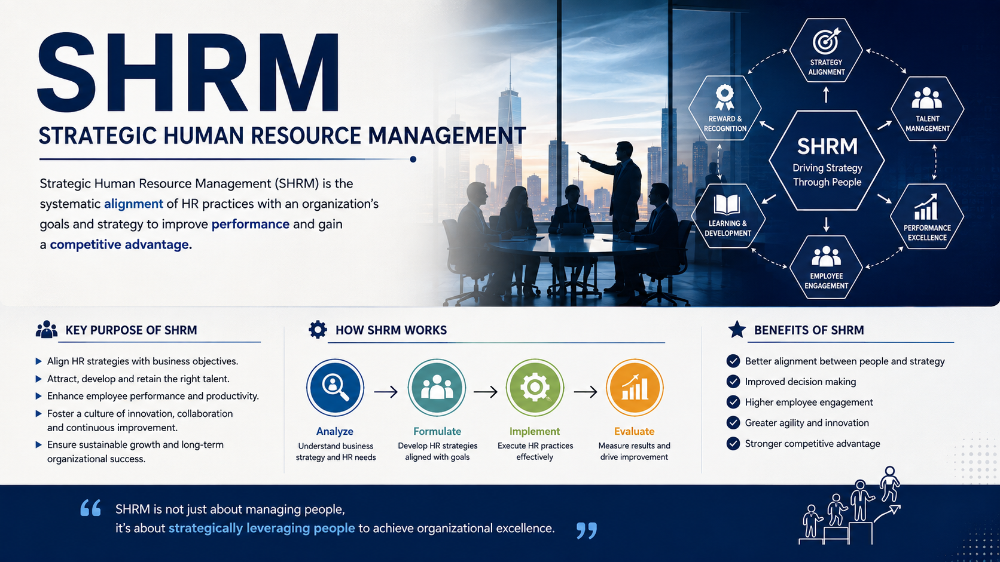

Strategic Human Resource Management (SHRM) aligns HR practices with organizational goals. It focuses on developing employees and using their skills to achieve long-term success and competitive advantage.
SHRM helps organizations make effective use of their human resources by connecting employee performance with business goals. It also improves employee development, productivity, and organizational growth.

[INSERT IMAGE HERE]
SHRM means managing employees strategically to support an organization's goals. It focuses on using and developing human resources for better organizational performance.
"SHRM is the pattern of planned human resource deployments and activities intended to enable an organization to achieve its goals."
— Wright & McMahan
Integrates HR policies seamlessly with corporate strategy.
Focuses on future organizational goals rather than short-term tasks.
Anticipates future HR needs instead of reacting to current crises.
Treats employees as strategic assets rather than variable costs.
To build a highly skilled workforce that competitors cannot easily replicate.
To ensure that individual employee goals directly feed into the wider business mission.
To foster an organizational culture of continuous learning, innovation, and commitment.
To maximize overall organizational productivity through targeted talent management.
Helps organizations adapt quickly to rapidly changing global markets and technology.
Creates rewarding environments that keep top-tier talent from leaving for competitors.
Ensures maximum Return on Investment (ROI) for all human capital expenditures.
Strategic Human Resource Management is not merely an administrative function; it is the critical bridge between human capital and organizational triumph.
"People are the ultimate strategy."
Thank you for your time and attention.
Presenter
|
Institution
Guided by: